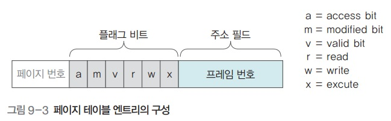

가상메모리 관리
가상메모리 관리
프로세스의 일부만 메모리로 가져오는 이유
- 메모리를 효율적으로 관리하기 위해서
- 메모리가 꽉 차면 관리가 어려움
- 응답 속도를 향상시키기 위해서
- 용량이 큰 프로세스를 전부 메모리로 가져오려면 응답이 늦어질 수 있음
- 포토샵을 쓴다면 메인 프로그램만 올리고 필터는 사용자가 필요할 때 마다 메모리로 가져오는 것이 효율적이라는 것
요구 페이징
- 사용자가 요구할 때 해당 페이지를 메모리로 가져오는 것
- 페이지를 미리 가져오는 방식은 가져온 페이지를 쓰지 않을 경우 메모리를 낭비하게 됨
- 따라서 요구 페이징이 메모리의 절약, 효율적 관리, 응답 속도 향상 등의 장점을 가짐
요구 페이징과 스왑 영역
- 페이지가 스왑 영역에 있는 경우
- 요구 페이징으로 인해 처음부터 물리 메모리에 올라가지 못함
- 메모리가 꽉 차서 스왑 영역으로 옮긴 경우
페이지 테이블 엔트리 (.의 구성)

- 페이지 번호
- 프레임 번호
- 플래그 비트
- 접근 비트 : 페이지가 메모리에 올라온 후 사용한 적이 있는가
- 변경 비트 : 페이지가 메모리에 올라온 후 데이터의 변경이 있었는가
- 유효 비트 : 페이지가 실제 메모리에 있는가
- 읽기, 쓰기, 실행 권한 비트
유효 비트

- 페이지가 물리 메모리에 있는지, 스왑 영역에 있는지 표시
- 유효 비트가 0일 때 : 페이지가 메모리에 있다
- 유효 비트가 1일 때 : 페이지가 스왑 영역에 있다
페이지 부재
- 프로세스가 페이지를 요청했을 때, 메모리에 그 페이지가 없는 상황
- 페이지 부재가 발생하면 스왑 영역에서 해당 페이지를 물리 메모리로 옮겨야 함

페이지 부재 처리 과정

- 프로세스가 페이지 3을 요청하면 페이지 테이블의 유효 비트가 1이기 때문에 페이지 부재 발생
- 메모리 관리자는 스왑 영역의 0번에 있는 페이지를 메모리의 비어 있는 프레임인 5로 가져옴 (스왑 인)
- 프레임 5로 접근하여 해당 데이터를 프로세스에 넘김
페이지 교체
- 페이지 부재가 발생하면 스왑 영역의 페이지를 메모리로 올리고 페이지 테이블을 갱신
- 빈 프레임이 없을때는 메모리에 있는 프레임 중 하나를 스왑으로 보내야함
페이지 교체 알고리즘
- 어떤 페이지를 스왑 영역으로 보낼 것인지 결정
대상 페이지
- 페이지 교체 알고리즘에 의해 스왑 영역으로 보낼 페이지
메모리가 꽉 찬 상태에서 페이지 부재가 발생했을 때 조치

- 페이지의 유효 비트가 1이라 페이지 부재 발생
- 메모리가 꽉 차서 페이지 하나를 스왑으로 보내야 함
- 대상 페이지의 유효비트가 0에서 1로, 주소 필드 값이 메모리 주소에서 스왑 영역의 주소로 바뀜
- 스왑 영역에 있던 페이지는 메모리(프레임)으로 올라감 (스왑 인)
- 해당 페이지의 유효비트는 1에서 0으로, 주소 필드 값이 스왑 주소에서 프레임 번호로 바뀜
세그먼테이션 오류와 페이지 부재
- 세그먼테이션 오류
- 사용자의 프로세스가 주어진 메모리 공간을 벗어나거나, 접근 권한이 없는 곳에 접근할 때 발생
- 해당 프로세스를 강제 종료하여 해결
- 페이지 부재
- 해당 페이지가 물리 메모리에 없을 때 발생하는 오류
- 메모리 관리자는 스왑 영역에서 해당 페이지를 불러 물리 메모리로 옮긴 후 작업을 진행
지역성
- 기억장치에 접근하는 패턴이 특정 영역에 집중되는 성질
- 즉 계속 특정 부분 데이터만 계속 사용된다는 거
- 페이지 교체 알고리즘이 ‘대상 페이지’를 지정할 때 지역성을 바탕으로 함
지역성의 종류

- 공간의 지역성
- 현재 위치에서 가까운 데이터에 접근할 확률이 먼 거리에 있는 데이터에 접근할 확률보다 높음
- 시간의 지역성
- 현재를 기준으로 가장 가까운 시간에 접근한 데이터가 오래된 데이터보다 사용될 확률이 높음
- 순차적 지역성
- 여러 작업이 순서대로 진행되는 경향이 있음